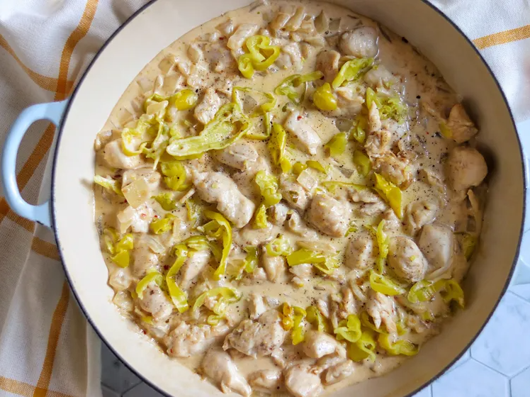
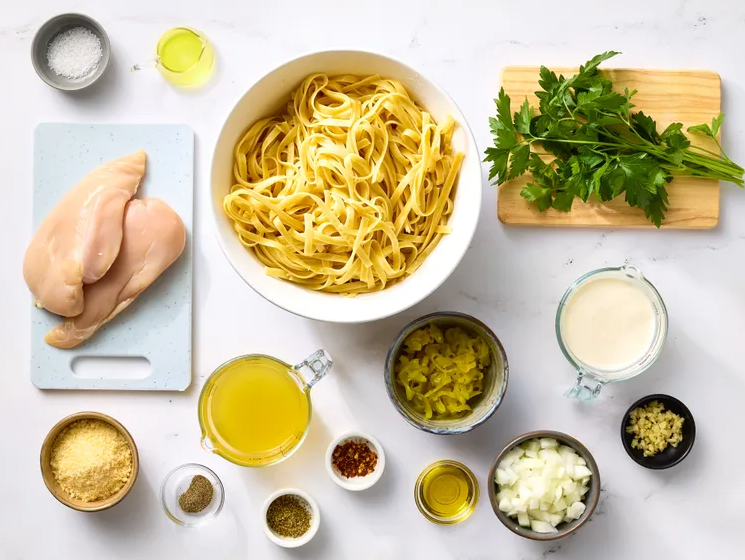
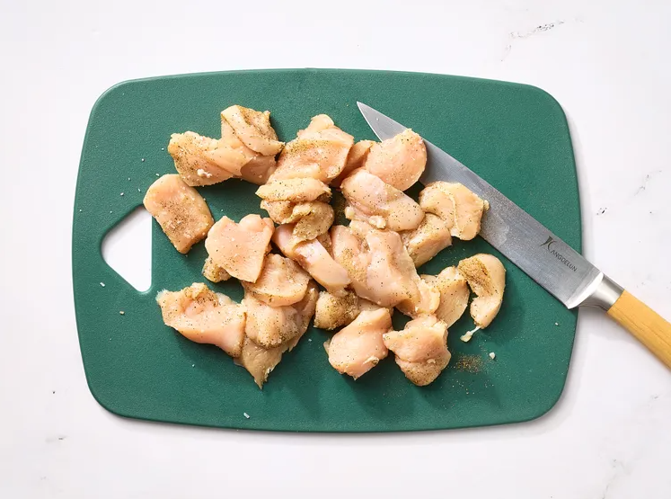
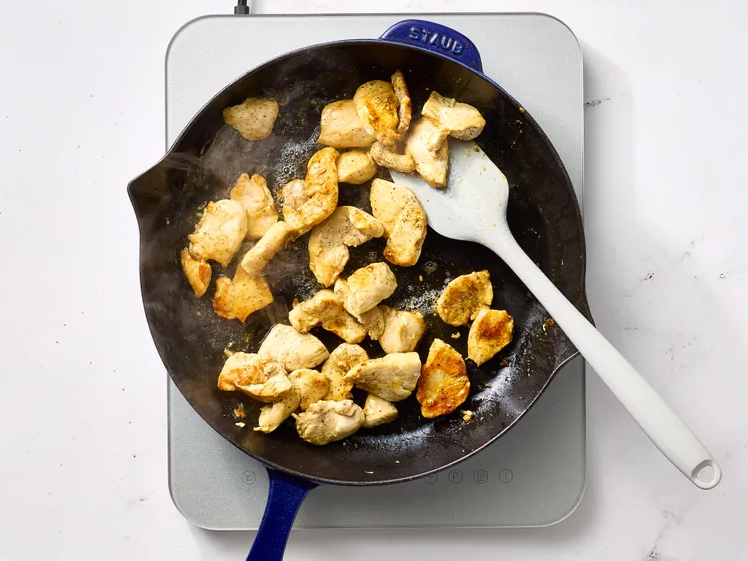
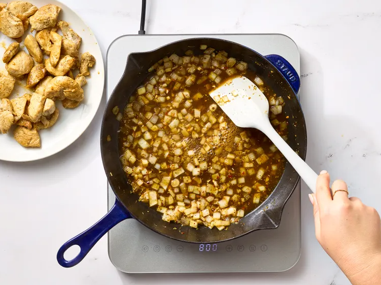
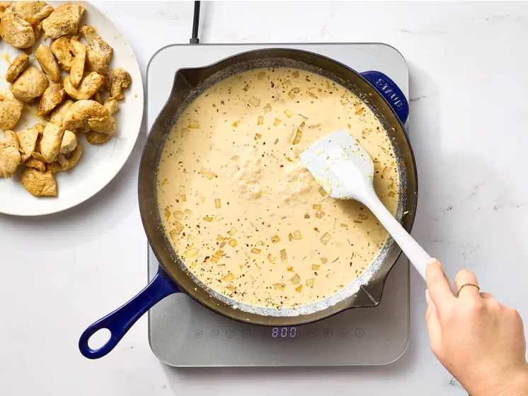
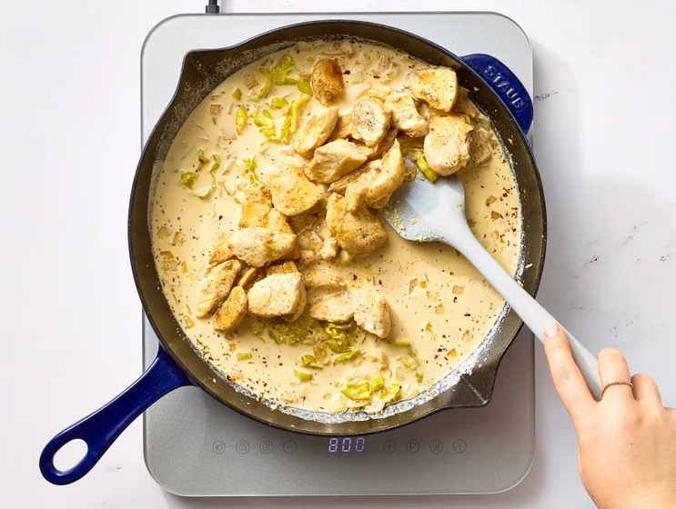
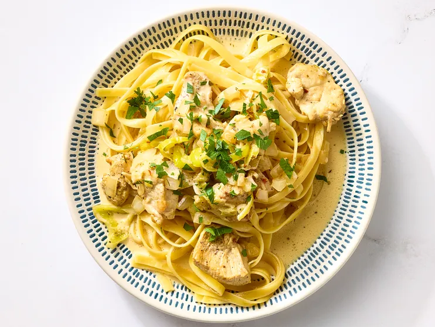

Creamy Pepperoncini Chicken
Chicken

Description
This creamy pepperoncini chicken is a great weeknight one skillet meal that’s quick and easy to make! Serve with orzo, potatoes, pasta, or rice.
Ingrediants
- 1 pound skinless, boneless chicken breasts
- 1/2 teaspoon salt
- 1/4 teaspoon freshly ground black pepper
- 1 tablespoon olive oil
- 1 cup chopped yellow onion
- 3 cloves garlic, minced
- 3/4 cup chicken broth
- 1/2 teaspoon dried oregano
- 1/4 teaspoon crushed red pepper, or more to taste
- 3/4 cup whipping cream
- 1/2 cup grated Parmesan cheese
- 1 teaspoon pepperoncini brine
- 1/2 cup sliced pepperoncini peppers
- Chopped fresh parsley
Steps
- Gather all ingredients.

- Cut chicken breasts into cubes; season both sides with salt and black pepper.

- Heat olive oil in a large skillet over medium heat. Place chicken in skillet
and cook until lightly browned and no longer
pink in the center, about 6 minutes.
An instant-read thermometer inserted into the center should read 165 degrees F
(74 degrees C).
Transfer cooked chicken to a plate and set aside.

- Add onion to the skillet; cook 2 minutes. Add garlic; cook until fragrant,
about 1 minute. Add broth, oregano, and crushed
red pepper. Simmer until reduced by half, about 2 minutes.

- Stir in cream, Parmesan, and pepperoncini brine. Bring to a simmer and cook until slightly thickened, about 5 minutes.

- Return chicken to skillet and toss to coat. Add sliced pepperoncini.

- Serve garnished with parsley, if desired.
